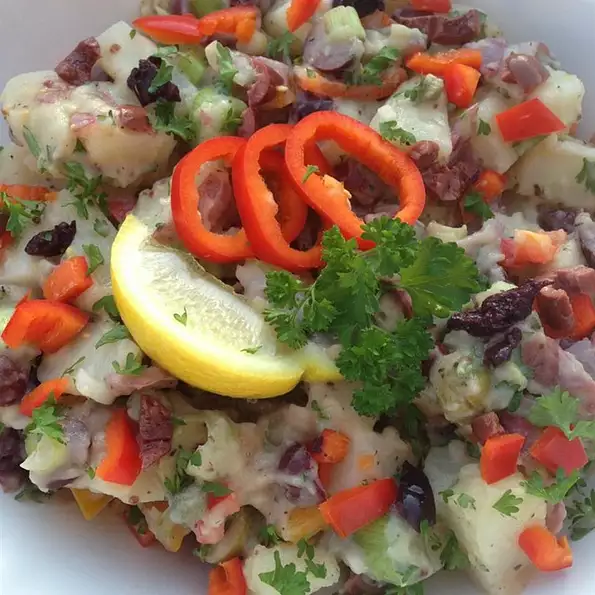

Savory Spanish Potato Salad

Description:
A savory spanish potato salad you can make for the whole family.
Ingredients:
- 1 pound small red potatoes
- 3 tablespoons olive oil
- 1 tablespoon red wine vinegar
- 2 garlic cloves, crushed
- 1 small red bell pepper, chopped
- 2 tablespoons pimento-stuffed green olives, sliced
- 1 tablespoon minced shallot
- 1 tablespoon chopped fresh parsley
- salt and ground black pepper to taste
- 1 lemon, cut into wedges (Optional)
Steps:
- Place potatoes into a pot and cover with salted water; bring to a boil. Reduce heat to medium-low and simmer until tender, about 10 minutes. Drain and cool until easily handled. Slice potatoes about 1/2-inch thick and place in a bowl.
- Whisk olive oil and vinegar together in a bowl; stir in garlic. Pour dressing over potatoes and lightly toss to coat.
- Mix red bell pepper, green olives, shallot, parsley, salt, and pepper into potatoes. Serve salad with lemon wedges to squeeze over each serving.
Back to main